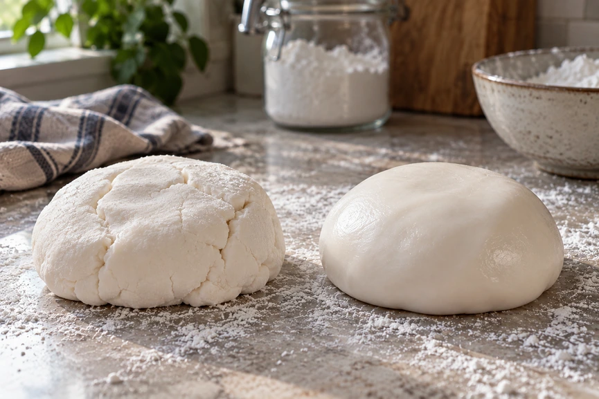
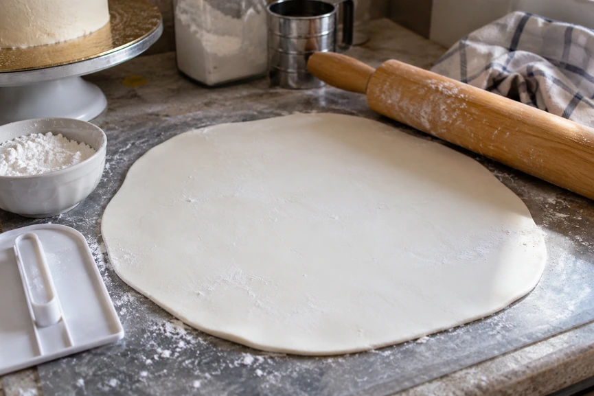
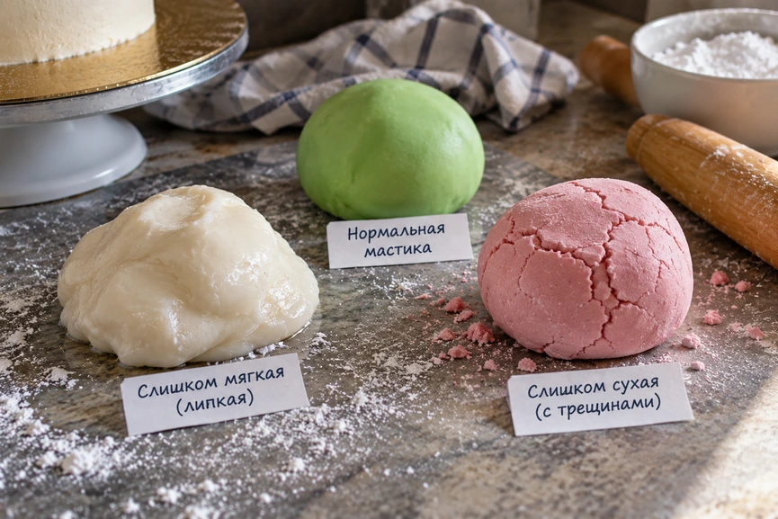

Если вы впервые взяли в руки сахарную мастику, не спешите сразу раскатывать её и переносить на торт. Сначала массу нужно подготовить: дать ей согреться, хорошо размять и убедиться, что она стала мягкой и эластичной.
Работать с мастикой несложно, если соблюдать несколько основных правил. Не оставляйте её надолго открытой, не добавляйте слишком много сахарной пудры и не раскатывайте пласт слишком тонко. Тогда мастика будет меньше сохнуть, трескаться и рваться во время работы.
Коротко: как работать с мастикой
- Достаньте мастику из упаковки и дайте ей согреться до комнатной температуры.
- Хорошо разомните массу руками до мягкости и эластичности.
- При необходимости окрасьте мастику.
- Слегка припудрите рабочую поверхность крахмалом или сахарной пудрой.
- Раскатайте мастику в ровный пласт нужного размера.
- Используйте её для обтяжки торта, лепки фигурок или изготовления декора.
- Остатки сразу плотно заверните и уберите в герметичную упаковку.
Главное во время работы — не давать мастике пересыхать. Отделяйте только то количество, которое понадобится вам сейчас, а остальную массу держите закрытой.
Что понадобится для работы с мастикой
Для первых работ не обязательно покупать большое количество специальных кондитерских инструментов.
- гладкая рабочая поверхность или силиконовый коврик;
- качалка;
- сахарная пудра или крахмал;
- острый нож или роликовый нож;
- пищевая плёнка;
- утюжок для мастики — если планируете обтягивать торт;
- пищевые красители — если мастику нужно окрасить.
Обычная деревянная качалка тоже подойдёт, но гладкой пластиковой работать удобнее: к ней меньше прилипает сахарная масса.
Как подготовить мастику к работе

Мастика, которая долго лежала в упаковке или в прохладном месте, может стать плотной и твёрдой. В таком состоянии её трудно раскатывать: края начинают трескаться, а сам пласт получается неровным.
Оставьте мастику при комнатной температуре, а затем постепенно разминайте её руками.
Хорошо подготовленная мастика должна быть мягкой, пластичной и однородной, без выраженных трещин по краям. Она не должна постоянно липнуть к рукам.
Если масса легко сгибается и растягивается, но при этом сохраняет форму, с ней уже можно работать.
Важно!
Не пытайтесь сразу раскатывать холодную твёрдую мастику. Сначала дайте ей согреться и хорошо разомните. Иначе пласт будет трескаться и рваться уже во время раскатывания.
Если мастику вы готовите самостоятельно, можно использовать один из рецептов из статьи «Как сделать сахарную мастику в домашних условиях».
Как правильно разминать мастику
Отделите необходимый кусок и несколько минут разминайте его ладонями примерно так же, как плотное тесто.
Сначала мастика может сопротивляться и казаться слишком твёрдой. По мере разминания она нагревается от рук и становится значительно пластичнее.
Если масса очень плотная, не спешите добавлять жидкость или большое количество сахарной пудры. Сначала просто продолжите вымешивание.
Если мастика слегка липнет к рукам, иногда достаточно совсем немного припудрить ладони или рабочую поверхность крахмалом.
Сколько мастики нужно на торт
Количество мастики зависит прежде всего от диаметра и высоты торта.
Для круглого торта высотой около 10 см можно ориентироваться примерно на такие значения:
| Диаметр торта | Мастики примерно |
|---|---|
| 15 см | 500–550 г |
| 20 см | 650–700 г |
| 25 см | около 1 кг |
| 30 см | 1,3–1,4 кг |
Это ориентир, а не строгая норма. Расход зависит от толщины раскатки, высоты торта и того, какой запас вы оставляете по краям.
Размер самого пласта удобно рассчитывать по простой формуле: диаметр торта + две его высоты. Например, для торта диаметром 20 см и высотой 10 см нужен пласт не меньше 40 см в диаметре. Можно добавить небольшой рабочий запас, но делать его чрезмерно большим тоже не стоит.
Как раскатывать мастику

Перед раскатыванием слегка припудрите рабочую поверхность крахмалом или сахарной пудрой. Их должно быть совсем немного — только чтобы мастика не прилипала.
Сформируйте из массы ровный шар, слегка приплюсните его ладонью и начинайте раскатывать от центра к краям.
Периодически поворачивайте пласт. Так проще контролировать его форму и вовремя заметить, что мастика начала прилипать к поверхности.
Старайтесь нажимать на качалку равномерно. Если сильно давить только в одном месте, одна часть пласта получится слишком тонкой, а другая останется толстой.
Если вы готовите мастику именно для покрытия торта, подробнее о раскатке и разглаживании читайте в статье «Как обтянуть торт мастикой без складок».
Какой толщины должна быть мастика
Для обтяжки торта удобный ориентир — примерно 3 мм. Такая толщина позволяет получить достаточно эластичный пласт, который ещё удобно переносить и разглаживать.
Слишком толстый слой получается тяжёлым и грубым при нарезании.
Слишком тонкий пласт легче рвётся, сильнее растягивается и подчёркивает неровности основания.
Если вы работаете с мастикой впервые, лучше не стремиться раскатать её максимально тонко. Сначала важнее получить ровный и целый пласт.
Как перенести мастику
Большой раскатанный пласт удобнее переносить при помощи качалки.
Аккуратно заведите качалку под мастику или свободно перекиньте пласт через неё, поднимите и перенесите к торту. Не натягивайте мастику и не тяните её за край.
После переноса сначала уложите покрытие на верх торта, а затем уже переходите к бокам. Подробно весь процесс показан в пошаговой инструкции по обтяжке торта мастикой из маршмеллоу.
Что делать, если мастика липнет
Небольшая липкость при разминании ещё не означает, что с мастикой что-то не так.
Сначала попробуйте немного дольше размять массу, дать ей несколько минут полежать или слегка припудрить руки и поверхность крахмалом.
Добавлять много сахарной пудры сразу не стоит. Избыток пудры может сделать массу сухой и менее эластичной.
Если мастика стала липкой после окрашивания, возможно, красителя было слишком много или он оказался слишком жидким. Для окрашивания всей массы удобнее использовать гелевые пищевые красители — подробнее об этом читайте в статье «Как покрасить мастику».
Что делать, если мастика стала твёрдой
Чаще всего мастика твердеет после хранения или если долго лежит открытой.
Сначала хорошо разомните её тёплыми руками. Нередко этого достаточно, чтобы масса снова стала пластичной.
Если поверхность успела подсохнуть совсем немного, при вымешивании сухие участки постепенно соединятся с мягкой частью.
Сильно засохшую мастику восстановить намного сложнее, поэтому во время работы лучше не оставлять основной кусок на столе без упаковки.

Почему мастика рвётся
Причин может быть несколько:
- массу плохо размяли перед раскатыванием;
- мастика слишком сухая;
- пласт раскатан слишком тонко;
- при переносе его сильно растянули;
- мастика долго лежала открытой и начала подсыхать.
Небольшой разрыв иногда удаётся аккуратно сгладить, но намного проще не допускать пересыхания массы и не раскатывать её слишком тонко.
Как хранить остатки мастики
После работы соберите чистые остатки мастики в один кусок и хорошо разомните.
Затем плотно заверните массу в пищевую плёнку и положите в герметичный пакет или контейнер. Храните в сухом прохладном месте, защищённом от прямого света, если производитель конкретной мастики не указал другой режим.
Особенно важно сразу упаковывать небольшие кусочки: они высыхают значительно быстрее большого комка.
Перед следующим использованием мастику снова нужно будет хорошо размять.
Строго не делайте!
Не оставляйте мастику открытой. Даже если вы отвлеклись всего на несколько минут, ненужный сейчас кусок лучше завернуть.
Не добавляйте сразу много сахарной пудры или крахмала. Мастика может потерять эластичность и начать трескаться.
Не раскатывайте пласт слишком тонко. Особенно если это ваша первая обтяжка.
Не тяните мастику за края при переносе на торт. От этого она растягивается и легко рвётся.
Не начинайте работу с холодной и твёрдой массой. Сначала мастику нужно хорошо размять.
Не пытайтесь одной мастикой исправить неровный торт. Она повторяет форму основания, поэтому поверхность под обтяжку должна быть подготовлена заранее.
Что делать дальше
Когда вы научились разминать и раскатывать мастику, можно переходить к отдельным техникам.
Для ровного покрытия пригодится инструкция по обтяжке торта мастикой без складок. Если используете массу из маршмеллоу, посмотрите пошаговую инструкцию именно для неё.
Для цветной мастики понадобится материал о пищевых красителях и способах окрашивания.
А для объёмного декора и фигурок нужна более плотная масса и немного другой подход к работе — эту тему лучше рассмотреть отдельно.